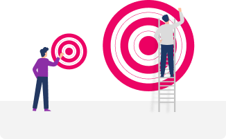
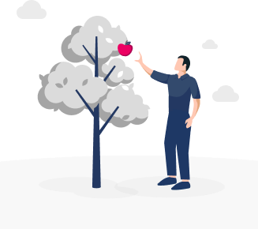

Почему нам важно снимать лоск с наших целей?
Потому что если у нас есть представление о цели, что она очень крутая, что она невероятно обалденно классная, то достичь такой цели нам будет гораздо сложнее.
Почему так происходит?
У нас возникнает определенный уровень сопротивления, и мы можем даже не позволить себе эту цель.
Снятие лоска —
это один из ключей к тому, чтобы цели ваши были для вас легкодоступны, как яблоко на ветке.
То есть были для вас желанными, но при этом не таких огромных размеров, какими вы сейчас их ощущаете.
Что для этого необходимо?
Для этого нам нужно посмотреть образ нашей цели. Допустим мы хотим увеличить доход от бизнеса не в три раза, а в десять раз.
И в три раза мы уже несколько раз увеличивали, мы поняли,
как нам воспользоваться “снятием лоска” для того, чтобы увеличить именно на такой большой объем. Большим он нам кажется сейчас. Для этого нужно понять, в первую очередь, что вот эти эпитеты – крутой, масштабный, большой, - это, всего лишь, эпитеты, это всего лишь установки, всего лишь наше представление об этой цели.
Для этого нужно понять, в первую очередь, что вот эти эпитеты – крутой, масштабный, большой, - это, всего лишь, эпитеты, это всего лишь установки, всего лишь наше представление об этой цели.
Плюс, возможно, мы поймем, когда мы снимем все эти эпитеты,
а реально ли мы хотим эту цель? Или она завязана на нашей самооценке. Предваряя следующий уровень,
мы уже можем проговорить,
что есть цели, которые завязаны на нашей самооценке.
Возможно, мы их и хотим, а возможно, мы их не хотим, а просто мы считаем, что только если у нас будет такая цель, мы сможем ощущать себя классными, мы сможем испытывать уважение к себе.
И уже здесь, когда вы снимете лоск с вашей цели, вы сможете оценить, вы сможете почувствовать,
а реально ли я хочу этого?.
Достижение цели из ощущения себя классным
не работает.
Потому что ваше подсознание всегда пытается вам доказать, что вы и так классный, и просто так вам не нужно ничего доказывать и изображать из себя для того,
чтобы испытывать уважение к себе.
Eсли мы хотим зарабатывать один миллион рублей, то совершенно неважно, будем ли мы ощущать эти деньги огромной суммой или просто обычной суммой. С точки зрения достижения, обычную сумму нам достичь гораздо проще. А с точки зрения реальности, какая разница, какие это будут 1 миллион рублей?
В любом случае, это та цель, которую мы хотим достичь, реализовать в своей реальности.
Снятие лоска нас интересует здесь не только, как элемент нормы, но и как важнейший элемент, чтобы не испугаться своих же собственных результатов. Потому что у своих же собственных результатов можно точно так же убрать эпитеты, которые вы на них сейчас накладываете.
Пока мы не решили, что это какое-то чудо, которое с нами произошло,
это обычный процесс.
Вы
получаете свои результаты
наподобие того, что вы идете в спортзал, качаете определенные мышцы, и они начинают расти.
И это, в принципе, не вызывает у вас
ощущения, что это какое-то чудо.
Здесь все то же самое. Вы качаете свои внутренние такие мышцы,
вы работаете со своим сознанием, подсознанием, и вы получаете от этого результаты.
Прямо сейчас посмотрите
образ ваших результатов через тренажер “Образ”,
если они кажутся вам крутыми, проработайте в тренажере “Установка”: “Только если я буду ощущать результат крутым, я смогу ощущать себя классным”